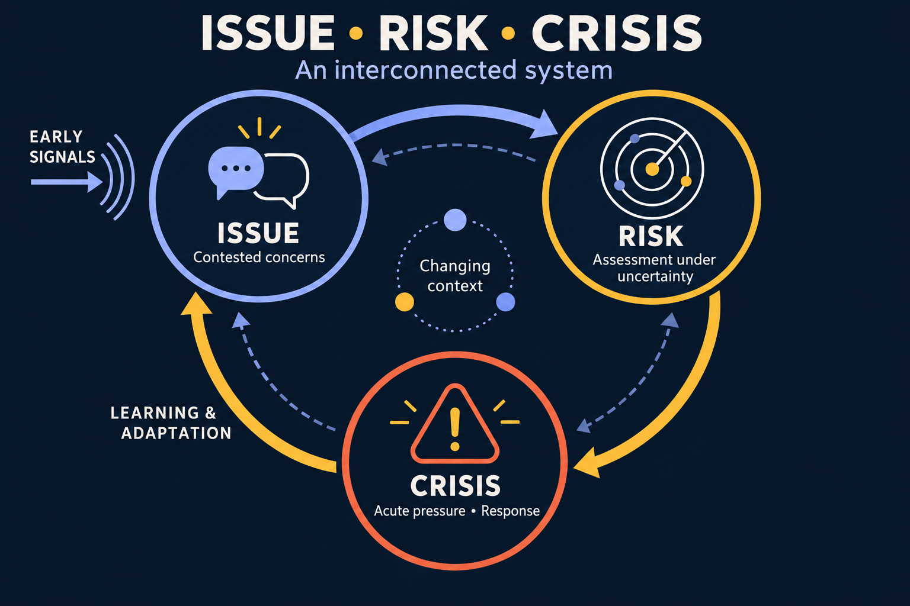

Issue
A contested matter develops when organisational conduct, public expectations and competing interpretations no longer align. Issue management asks what the organisation must notice, understand and change.
MMP311 · Master's elective · 15 ECTS
A case-oriented learning resource about how organisations identify contested issues, assess risk under uncertainty, communicate before and during crises, and learn from response.
Course perspective
A contested matter develops when organisational conduct, public expectations and competing interpretations no longer align. Issue management asks what the organisation must notice, understand and change.
Risk communication concerns possible consequences, uncertainty, values and trust. Technical assessments matter, but they do not settle how people interpret what is at stake.
A crisis creates acute pressure on operations, legitimacy or both. Communication is part of the response, not an activity added after operational decisions have been made.

Analytical frameworks
PRK
PRK maps movement between an emerging problem, increasing risk and crisis. The model also follows the reverse movement: crisis response can create new problems, expectations and risks.
SOFT
SOFT widens attention beyond technical probability and consequence. It examines social conditions, opinion, framing, transparency and organisational conditions.
FIVER
FIVER organises issue and risk work as a recurring process of understanding, identifying, evaluating, revising and responding. It is a teaching and analytical framework, not a claim of empirical validation.
Learning path
Distinguish danger, uncertainty, probability, consequence, vulnerability and value. Ask whose risk is being assessed.
Map expectations, stakeholders, weak signals and the organisational conduct that has become contested.
Use PRK and SOFT to assess possible movement, competing frames and conditions that amplify or reduce concern.
Decide what must change in policy, priorities, operations or coordination. Communication cannot repair a material problem on its own.
Communicate decisions and uncertainty, evaluate how the response worked, and feed learning back into preparedness.
After the course
Students develop knowledge of risk, issue and crisis communication, post-crisis containment and recovery, preparedness and community responses.
Students assess practical work and analyse academic problems in light of the field's history, traditions, professional practice and place in society.
Journalistic attention
News criteria help explain why some issues receive attention while others remain less visible. They are editorial assessment tools, not neutral measures of social importance.
The story is relevant and important to a substantial audience. Events affecting many people normally receive greater priority.
The story gives audiences people, groups or situations with which they can identify. Concrete experience can make an abstract risk visible.
Unexpected, surprising or unusual developments attract attention. Sensation may increase visibility but does not necessarily indicate social importance.
The event is current or connected to an active public agenda. Editorial attention determines what is treated as relevant at a particular moment.
Disagreement, struggle and competing interests increase news value. Conflict can reveal accountability, but can also narrow attention to opposing positions.
Events involving powerful, prominent or widely recognised actors tend to receive more coverage.
Geographical, cultural or experiential closeness makes an event more relevant to a particular audience.
Information reported first or available only to one newsroom gains value in a competitive media environment.
Teaching resource developed by Kristian Fuglseth. The criteria are used to examine how journalistic selection interacts with issue, risk and crisis communication.
Spring 2027
The learning path connects the timetable, course reading, PRK, SOFT, FIVER, cases and student activities. Each resource can be revised independently.
Open the learning pathCore reading and sources
AI can support questions, comparison and language revision, but it does not replace reading, evidence or professional judgement. Verify claims, protect sensitive material and disclose relevant use. Read the Søk & Skriv guidance.